manim是用python开发的数学可视化的工具, 作者热衷于做一些数学知识的普及视频, 因而做了这个库, 后来开源了这个库, 我们得以使用, 下面这篇文章介绍了如何安装manim以及它所依赖的各种软件, 过程虽然麻烦, 但是并不难。
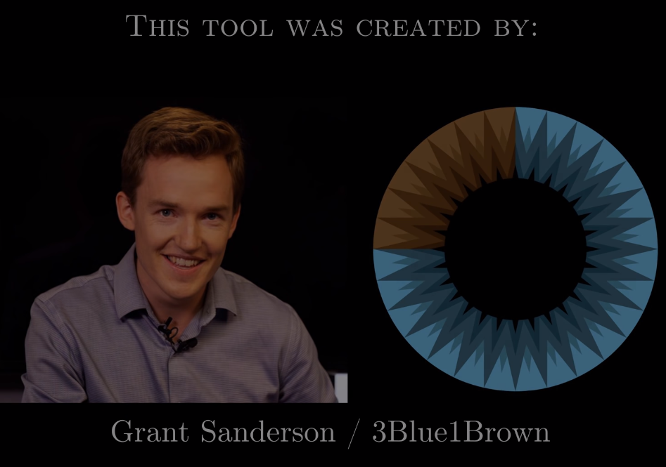
环境介绍 我使用win10(64位)系统, python3.6已经安装完毕, 并且已经安装好了jupyter notebook ,
使用pip安装manimlib 使用如下命令安装manimlib
如果你安装失败, 并且提示编码错误, 请先将你的win10系统的默认编码改成”utf-8”。
安装FFmpeg FFmpeg是一个视频处理工具, 安装方法很简单, 只需要现在文件, 放到一个你喜欢的位置即可。
下载地址: https://www.gyan.dev/ffmpeg/builds/ffmpeg-git-full.7z
解压得到这几个文件:
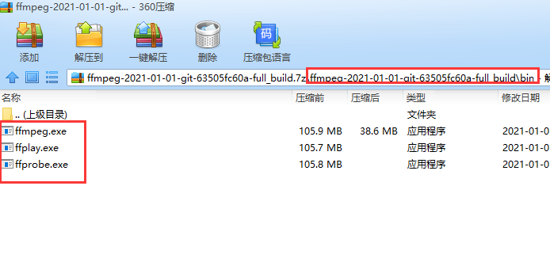
接下来需要将ffmpeg的所在文件夹添加到Path路径中, 我们文章后面”设置环境变量”中会介绍
安装pycairo 我们首先下载已经编译好的库, 下载地址在这里:
https://www.lfd.uci.edu/~gohlke/pythonlibs/#pycairo
由于我的python是3.6 64位, 因此我下载的是”pycairo‑1.20.0‑cp36‑cp36m‑win_amd64.whl”;
然后在命令行输入:
1 pip install PathToTheFile/pycairo‑1.20.0‑cp36‑cp36m‑win_amd64.whl
很快就能安装完毕, 输出是:
1 2 3 Looking in indexes: http://mirrors.aliyun.com/pypi/simple/ Processing d:\notebooks\pycairo-1.20.0-cp36-cp36m-win_amd64.whl pycairo is already installed with the same version as the provided wheel. Use --force-reinstall to force an installation of the wheel.
安装Miktex
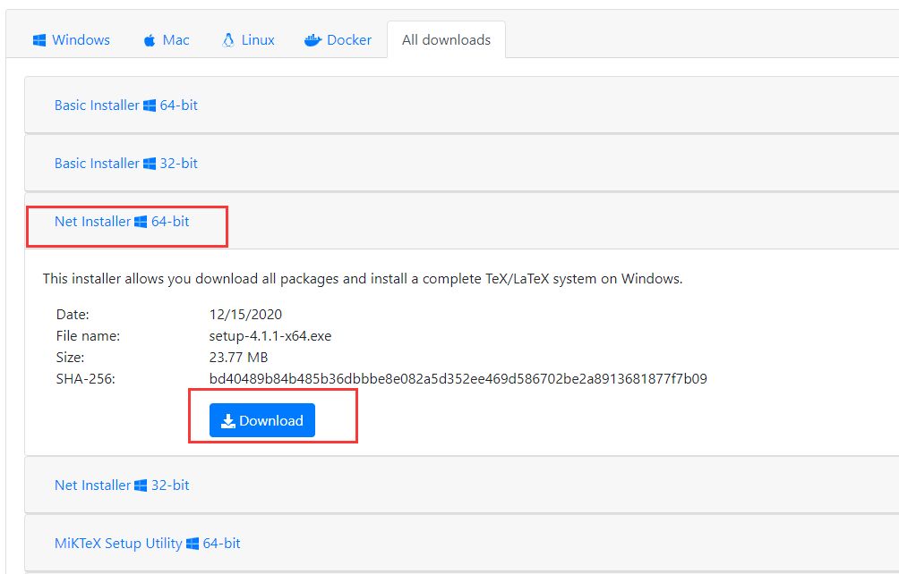
打开你下载的安装文件, 你会看到这个, 点击”下一步”
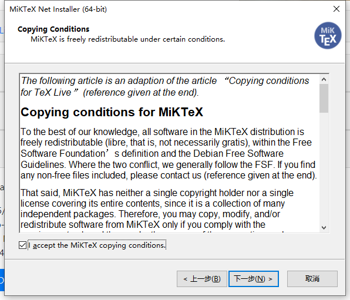
一般不需要完整安装, 只需要基本功能, 选择第一个
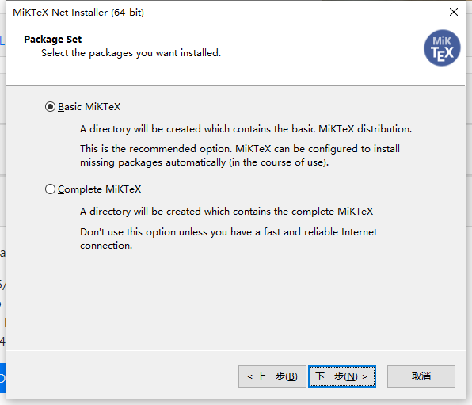
选择一个服务器, 选择China的服务器, 速度比较快
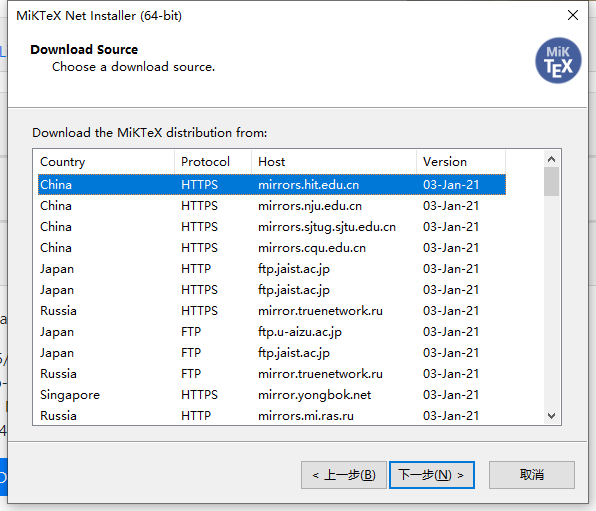
选项下载文件夹, 点击下一步就开始下载了, 记住你的这个下载文件夹, 后面要打开这个文件夹
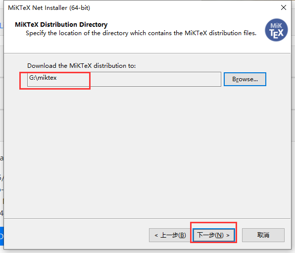
打开你下载好的文件, 然后双击’setup-4.1.1-x64.exe’来安装:
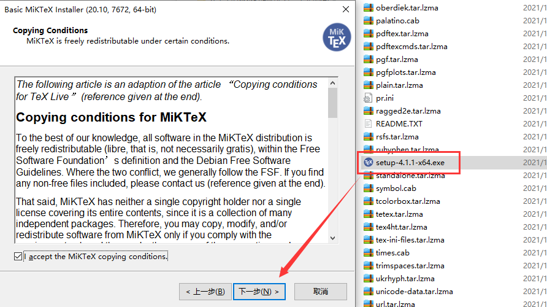
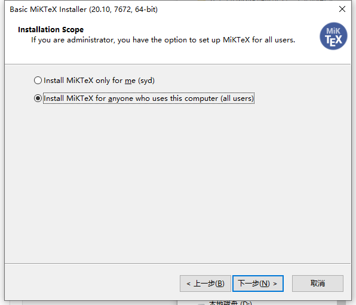
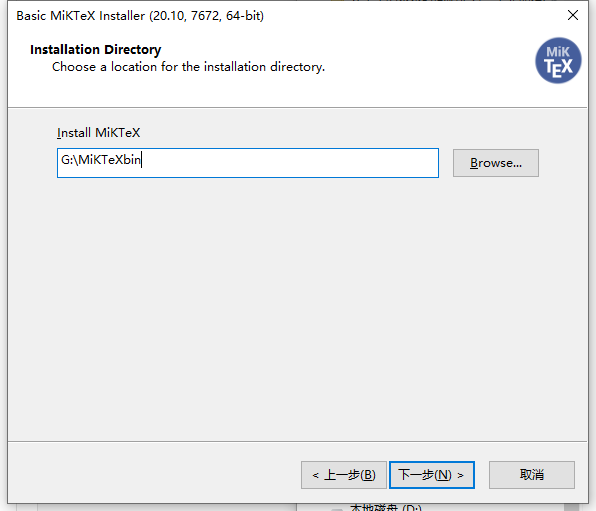
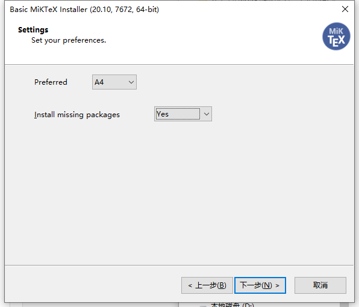
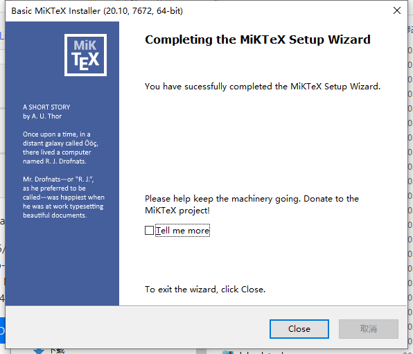
安装Sox
下载地址是: https://sourceforge.net/projects/sox/files/sox/14.4.2/
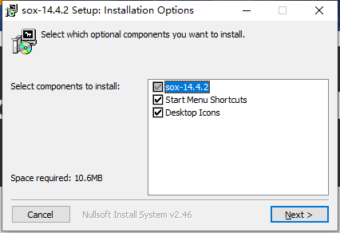
设置安装路径, 点击”install”, 基本上这样就安装完毕了, 后面需要将sox的安装路径添加到环境变量”path”中, 最后会讲
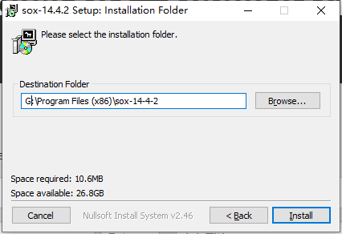
安装 jupyter-manim 使用pip安装:
1 pip3 install jupyter-manim
我们会看到安装成功的提示:
1 2 3 4 5 6 7 8 9 10 11 12 13 14 15 16 17 18 19 20 21 22 23 24 25 26 27 28 29 30 31 32 33 34 35 36 37 Looking in indexes: http://mirrors.aliyun.com/pypi/simple/ Collecting jupyter-manim Downloading http://mirrors.aliyun.com/pypi/packages/24/f9/344ff17d9c3f8f63b713da5c5101aadc93f90d120d5b1049340fc3dbae26/jupyter_manim-1.3.tar.gz (6.5 kB) Requirement already satisfied: manimlib in d:\venv\.common\lib\site-packages (from jupyter-manim) (0.1.11) Requirement already satisfied: IPython in d:\venv\.common\lib\site-packages (from jupyter-manim) (7.2.0) Requirement already satisfied: pickleshare in d:\venv\.common\lib\site-packages (from IPython->jupyter-manim) (0.7.5) Requirement already satisfied: traitlets>=4.2 in d:\venv\.common\lib\site-packages (from IPython->jupyter-manim) (4.3.2) Requirement already satisfied: colorama in d:\venv\.common\lib\site-packages (from IPython->jupyter-manim) (0.4.1) Requirement already satisfied: setuptools>=18.5 in d:\venv\.common\lib\site-packages (from IPython->jupyter-manim) (39.0.1) Requirement already satisfied: jedi>=0.10 in d:\venv\.common\lib\site-packages (from IPython->jupyter-manim) (0.13.2) Requirement already satisfied: decorator in d:\venv\.common\lib\site-packages (from IPython->jupyter-manim) (4.3.2) Requirement already satisfied: backcall in d:\venv\.common\lib\site-packages (from IPython->jupyter-manim) (0.1.0) Requirement already satisfied: pygments in d:\venv\.common\lib\site-packages (from IPython->jupyter-manim) (2.3.1) Requirement already satisfied: prompt-toolkit<2.1.0,>=2.0.0 in d:\venv\.common\lib\site-packages (from IPython->jupyter-manim) (2.0.7) Requirement already satisfied: parso>=0.3.0 in d:\venv\.common\lib\site-packages (from jedi>=0.10->IPython->jupyter-manim) (0.3.2) Requirement already satisfied: six>=1.9.0 in d:\venv\.common\lib\site-packages (from prompt-toolkit<2.1.0,>=2.0.0->IPython->jupyter-manim) (1.12.0) Requirement already satisfied: wcwidth in d:\venv\.common\lib\site-packages (from prompt-toolkit<2.1.0,>=2.0.0->IPython->jupyter-manim) (0.1.7) Requirement already satisfied: ipython-genutils in d:\venv\.common\lib\site-packages (from traitlets>=4.2->IPython->jupyter-manim) (0.2.0) Requirement already satisfied: tqdm in d:\venv\.common\lib\site-packages (from manimlib->jupyter-manim) (4.32.2) Requirement already satisfied: pycairo in d:\venv\.common\lib\site-packages (from manimlib->jupyter-manim) (1.20.0) Requirement already satisfied: numpy in d:\venv\.common\lib\site-packages (from manimlib->jupyter-manim) (1.16.0) Requirement already satisfied: pyreadline in d:\venv\.common\lib\site-packages (from manimlib->jupyter-manim) (2.1) Requirement already satisfied: opencv-python in d:\venv\.common\lib\site-packages (from manimlib->jupyter-manim) (4.5.1.48) Requirement already satisfied: pydub in d:\venv\.common\lib\site-packages (from manimlib->jupyter-manim) (0.24.1) Requirement already satisfied: colour in d:\venv\.common\lib\site-packages (from manimlib->jupyter-manim) (0.1.5) Requirement already satisfied: Pillow in d:\venv\.common\lib\site-packages (from manimlib->jupyter-manim) (7.2.0) Requirement already satisfied: progressbar in d:\venv\.common\lib\site-packages (from manimlib->jupyter-manim) (2.5) Requirement already satisfied: scipy in d:\venv\.common\lib\site-packages (from manimlib->jupyter-manim) (1.2.0) Collecting argparse Downloading http://mirrors.aliyun.com/pypi/packages/f2/94/3af39d34be01a24a6e65433d19e107099374224905f1e0cc6bbe1fd22a2f/argparse-1.4.0-py2.py3-none-any.whl (23 kB) Building wheels for collected packages: jupyter-manim Building wheel for jupyter-manim (setup.py) ... done Created wheel for jupyter-manim: filename=jupyter_manim-1.3-py3-none-any.whl size=6129 sha256=68c76efc157b44b67707414a5c9d4f493f7c2a427e21592e4b6d39afdad73eb3 Stored in directory: c:\users\syd\appdata\local\pip\cache\wheels\a6\7e\6f\d2e56daae96a0efd1d5dc17d7c4a929921895cd67fa2d8296d Successfully built jupyter-manim Installing collected packages: argparse, jupyter-manim Successfully installed argparse-1.4.0 jupyter-manim-1.3
设置环境变量 上面安装了一些windows软件, 然而我们的python想要调用这些软件(比如ffmpeg)需要将这些软件的安装路径配置到Path环境变量中。
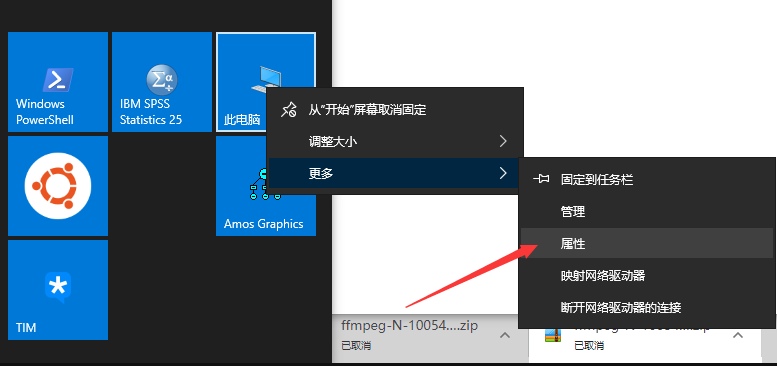
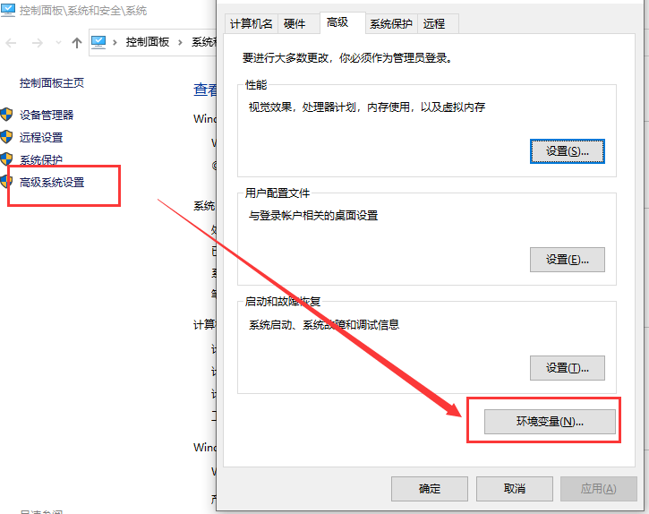
编辑”Path”这个变量, 然后新增”ffmpeg”的安装路径:
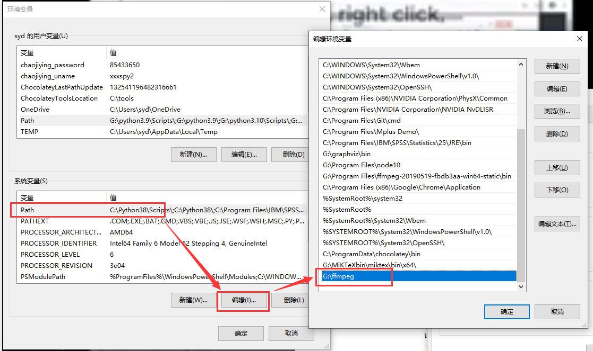
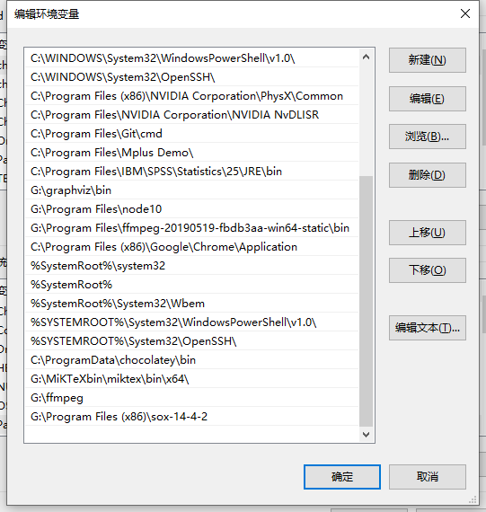
测试安装是否成功 为了能使用魔法%%manim, 我们首先要引入 jupyter_manim:
下面, %%manim就可以使用了, 我们测试一下:
1 2 3 4 5 6 7 8 9 10 %%manim Shapes from manimlib.scene.scene import Scenefrom manimlib.mobject.geometry import Circlefrom manimlib.animation.creation import ShowCreationclass Shapes (Scene ): def construct (self ): circle = Circle() self.play(ShowCreation(circle))
输出(html):
注意